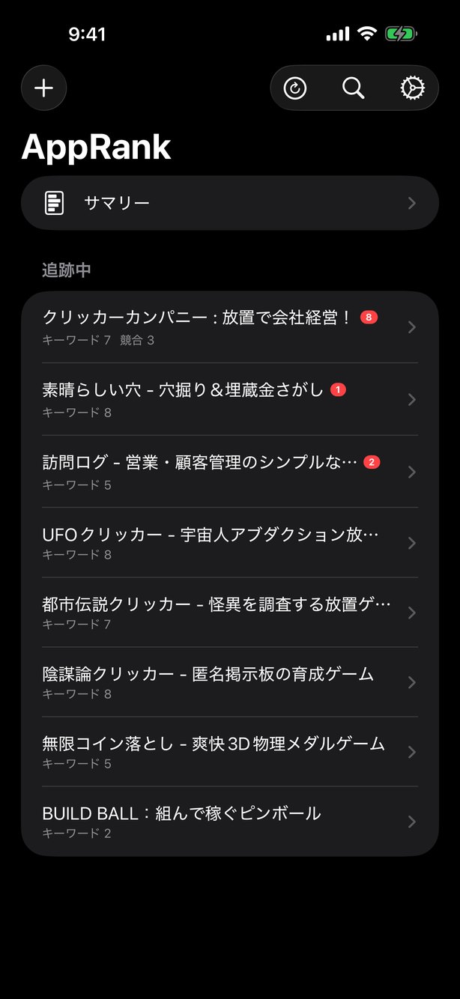
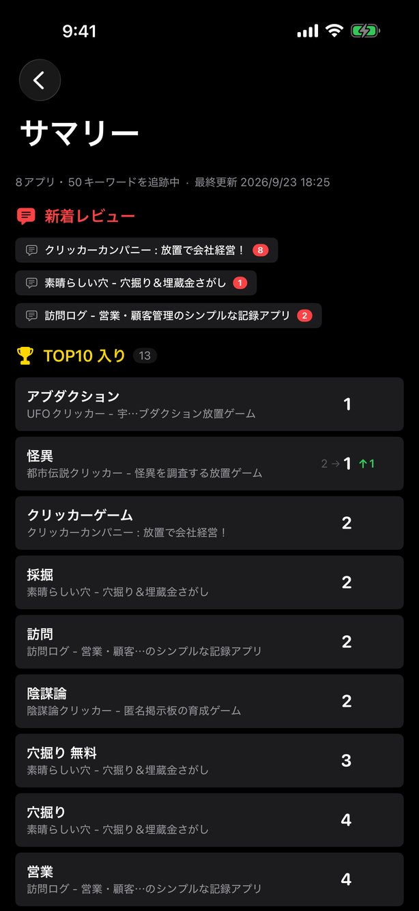
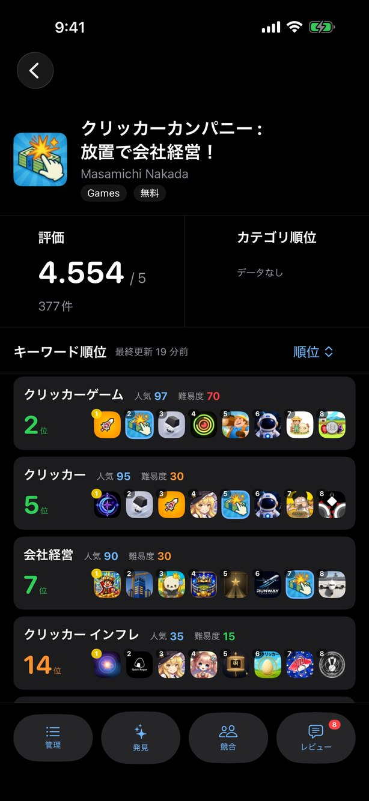
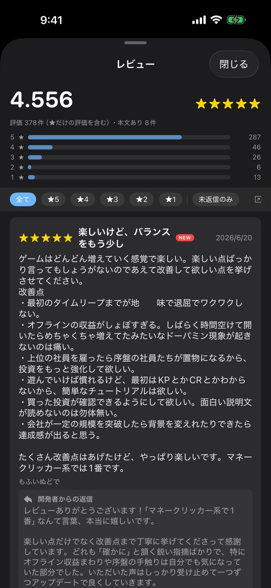
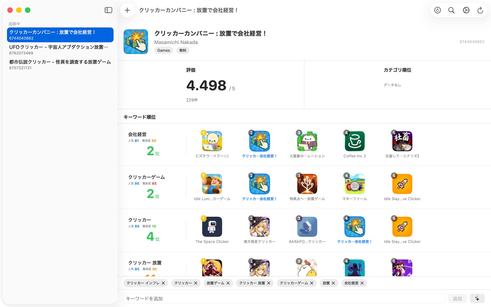
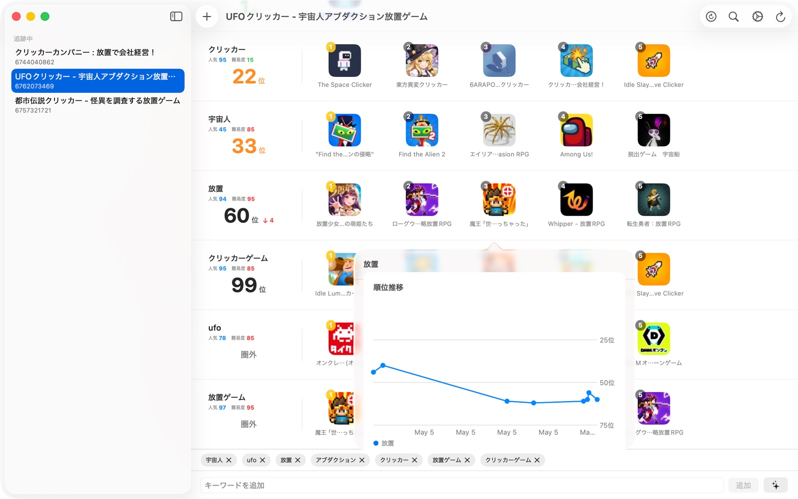
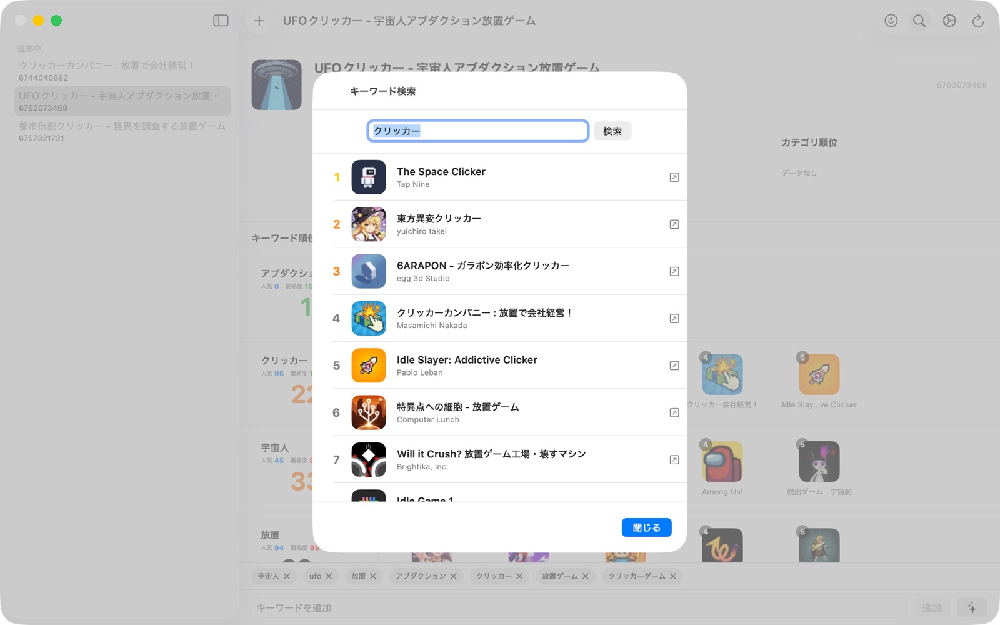

ASO の何が難しいか
画面
iPhone と Mac で同じデータを扱えます。







主な機能
キーワード順位の追跡
登録したキーワードで自分のアプリが何位に出るかを確認できます。上位アプリのアイコンも並ぶので、競合状況が同時にわかります。順位推移はグラフで確認できます。
人気度・難易度スコア
各キーワードの人気度（検索結果件数ベース）と難易度（上位アプリの評価数ベース）を数値化。狙うべきキーワードの優先順位を判断できます。
キーワードの事前チェック
登録する前に、人気度・難易度・現在順位・狙い目スコアをまとめて測定。枠を使う価値があるキーワードかを先に見極められます。
競合アプリの順位比較
競合アプリを登録しておくと、キーワードごとに自分と競合の順位が横に並びます。どのキーワードで負けているかが一目でわかります。
全アプリ横断のサマリー
複数アプリを追跡していても、上がったキーワード・下がったキーワード・TOP10 入りが一画面にまとまります。
レビューと評価の内訳
App Store のレビューを取得し、星ごとの件数分布と平均評価を表示します。未返信だけを絞り込めるので、返信の取りこぼしを防げます。新着が付くと通知でも知らせます。
キーワード発見
Apple のサジェストから候補を自動取得。アプリ情報からの自動抽出にも対応し、気づいていなかったキーワードを見つけられます。
カテゴリ順位
Apple 公式の RSS フィードからカテゴリ内順位を取得。無料ランキングでの自分の立ち位置を確認できます。
自動更新と通知
設定した間隔で自動的に順位を更新し、大きな変動があれば通知で知らせます。通信量に配慮して、既定では Wi-Fi のときだけ更新します。
iCloud で同期
iPhone と Mac のデータが iCloud 経由で同期されます。Mac で仕込んで、移動中に iPhone で順位を確認する、といった使い方ができます。
無料で試せます
まず無料の範囲で使い心地を確かめてから、必要になったら買い切りで解除してください。サブスクリプションはありません。
無料
アプリ 1 本・キーワード 5 個まで追跡できます。順位の取得、人気度・難易度スコア、カテゴリ順位、キーワード発見、レビューの閲覧はそのまま使えます。
Pro（買い切り）
アプリとキーワードの上限が無くなり、競合アプリの順位比較、キーワードの事前チェック、自動更新と通知が使えるようになります。一度購入すれば iPhone と Mac の両方で有効です。
こんな方に向いています
- 個人でアプリを公開していて、ASO に手が回っていない方
- メタデータ変更の効果を数字で確かめたい方
- 月額課金の ASO ツールは費用が見合わないと感じている方
- 複数アプリのキーワードをまとめて管理したい方
- 外出先の iPhone でも順位とレビューを確認したい方
- リリース前に市場調査だけしたい方
使い方
1. アプリを登録
App ID を入力して、追跡したいアプリを登録します。
2. キーワードを追加
狙いたいキーワードを登録します。サジェストからの発見や、登録前の事前チェックも使えます。
3. 順位を取得
更新ボタンを押すだけ。以降は自動更新に任せられます。
よくある質問
App Store Connect のアカウント連携は必要ですか？
必要ありません。Apple が公開している API のみを使用しているため、アカウント情報や認証キーを登録せずに使えます。
月額料金はかかりますか？
かかりません。無料で使いはじめられ、上限の解除も一度きりの買い切りです。サブスクリプションはありません。
iPhone と Mac で別々に購入が必要ですか？
必要ありません。同じ Apple アカウントであれば、一度の購入で iPhone と Mac の両方で有効になります。
以前に有料版を購入していました。どうなりますか？
無料化より前に購入いただいた方は、追加の支払いなしですべての機能をお使いいただけます。購入履歴から自動で判定します。
自分以外のアプリも追跡できますか？
できます。App ID を登録すれば、競合アプリの順位も同じように追跡できます。
順位はどのくらい正確ですか？
Apple の検索 API とランキングフィードの結果に基づいています。App Store アプリでの実際の表示とは、地域やパーソナライズの影響で差が出る場合があります。
通信量はどのくらいかかりますか？
1 キーワードあたり数百 KB 程度で、追跡する数に比例します。既定では Wi-Fi 接続時のみ自動更新するよう設定されており、設定画面から変更できます。
データはどこに保存されますか？
お使いの端末の中と、有効にした場合はご自身の iCloud にのみ保存されます。開発者のサーバーには何も送信されません。
サポート
不具合の報告、ご要望、使い方のご質問は、お問い合わせフォームからお寄せください。個人で開発・運営しているため、すべてに返信できるとは限りませんが、いただいた内容はすべて目を通しています。
メールの場合は support@gekisoba.com 宛にお送りください。
データの取り扱いについてはプライバシーポリシーをご覧ください。